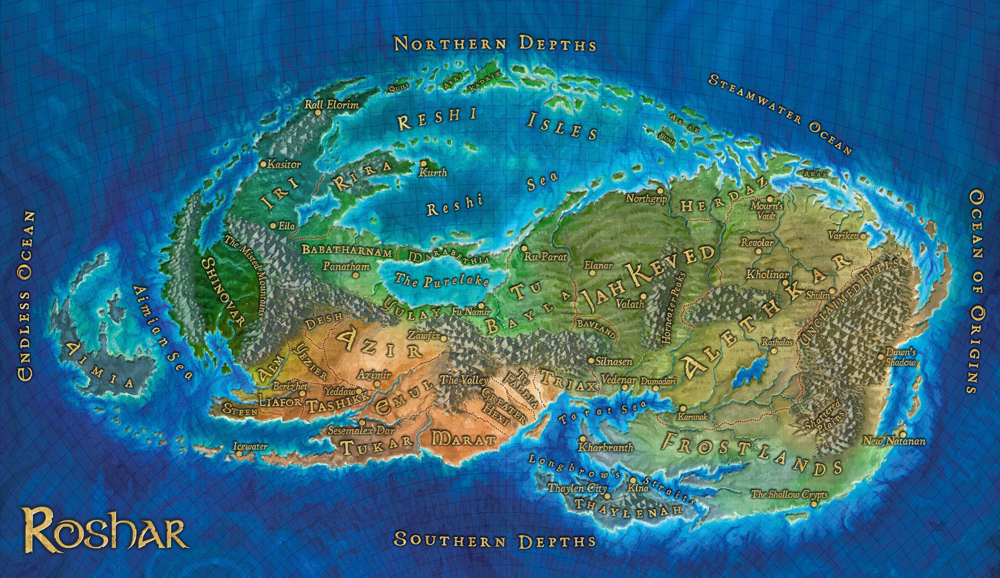

Mapa y Regiones de Roshar
Alezkar
Alezkar es la nación más grande y prominente entre las naciones vorin que componen Roshar. Está dividida en diez principados, cada uno con su alto príncipe. Las gentes de Alezkar reciben el nombre de Alezi, y al principio de los acontecimientos narrados en El Camino de los Reyes, se encuentran en guerra con otra raza conocida como los parshendi. Según los registros oficiales, Alezkar posee más hojas esquirladas que cualquier otra nación en Roshar.
Jah Keved
Jah Keved, cuya capital es Vedenar, es uno de los reinos vorin existentes en Roshar, ubicado en la mitad oriental del continente. Es el segundo estado más grande del planeta, abarcando aproximadamente un espacio de 5,5 millones de km cuadrados. Comparte frontera oriental con Alezkar y Herdaz en tres ríos, mientras que por el lado occidental linda con Tu Bayla y Triax. Cruza todo el continente de norte a sur, entre el Mar de Reshi y el Mar de Tarat.
Las tierras heladas
Las Tierras Heladas están ubicadas al sudoeste de Roshar, juso fuera de los límites de Alezkar. Es una región que vive en anarquía, donde la población es más bien escasa, en parte debido a que por ser la región más cercana al Origen es donde las altas tormentas golpean con más fuerza. Padecen unas temperaturas inusualmente frías y no ofrecen mucho resguardo contra las tormentas.
Kharbranth
Kharbranth, la Ciudad de las Campanas, es una ciudad-estado independiente de Roshar, gobernada por el rey Taravangian. Es una de las naciones vorin, y el hogar del Palaneo, la mayor biblioteca de Roshar. Kharbranth es conocida por sus hospitales, por lo que gentes de todas partes recorren el mundo entero para estudiar medicina junto a los cirujanos de Kharbranth.
Las Llanuras Quebradas
Las Llanuras Quebradas están ubicadas al borde de las Tierras Invernales y las Montañas Irreclamadas, antiguamente una parte de Natanatan durante los Reinos de Plata. Su nombre es acertado, ya que el terreno de las llanuras consiste de numerosas mesetas de tamaños diversos, rodeados por todas partes de profundos abismos. Se desconoce qué es lo que ocasionó que el terreno adquiriera esta forma.